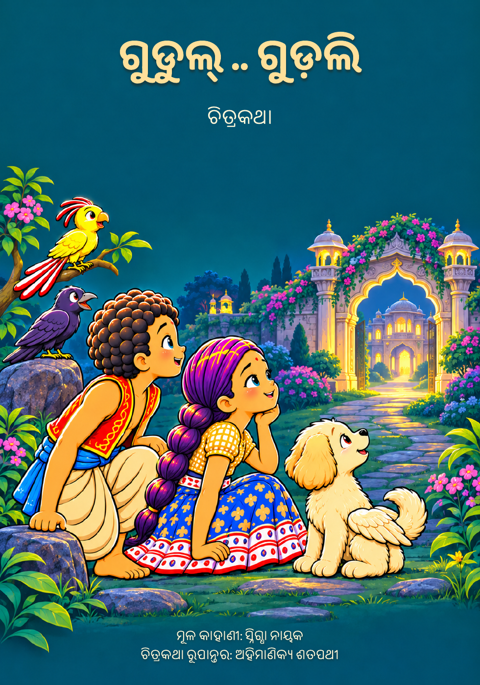

ଓଡ଼ିଆ ଚିତ୍ରକଥା · ୬୪ କାହାଣୀ ପୃଷ୍ଠା
ଗୁଡୁଲ୍ .. ଗୁଡ଼ଲି
ଚିତ୍ରକଥା ରୂପାନ୍ତର: ଅହିମାଣିକ୍ୟ ଶତପଥୀ
Comic Adaptation by Ahimanikya Satapathy
ହଜିଯାଇଥିବା ଏଲିନ୍କୁ ଖୋଜିବାକୁ ବାହାରିଛନ୍ତି ଗୁଡୁଲ୍ ଓ ଗୁଡ଼ଲି। ସାଙ୍ଗରେ ଚୁଇଁ ଓ ଡାମରା। ଅଜୁବା କୋଠିର ରହସ୍ୟ, ମାୟାବୀ ଜଙ୍ଗଲ ଓ ଅଜଣା ଜଗତ ଦେଇ ଆଗେଇ ଚାଲିଛି ସେମାନଙ୍କ ଯାତ୍ରା। ଏଲିନ୍ର ସନ୍ଧାନ ମିଳିବ କି?
ପୁସ୍ତକ ପଢ଼ନ୍ତୁ →ମଲାଟ ଓ ଶ୍ରେୟ ସହ ମୋଟ ୬୮ ପୃଷ୍ଠା। ଚିତ୍ରକୁ ବଡ଼ କରି ପଢ଼ିପାରିବେ।
ପୁସ୍ତକ ସଞ୍ଚୟ କରନ୍ତୁ
ରଙ୍ଗୀନ ପିଡିଏଫ୍ ↓ଧୂସର ଭିତର ପୃଷ୍ଠାର ପିଡିଏଫ୍ ↓ଧୂସର ସଂସ୍କରଣରେ ମଲାଟ ରଙ୍ଗୀନ ରହିଛି।
ପୁସ୍ତକର ଶ୍ରେୟ
ଚରିତ୍ର ଚିତ୍ରରୂପ: ପ୍ରୋଜେକ୍ଟ ଓଡ଼ିଶା
ଚିତ୍ର ପରିକଳ୍ପନା ଓ ପୁସ୍ତକ ସଜ୍ଜା: ଅହିମାଣିକ୍ୟ ଶତପଥୀ
ଚିତ୍ରାଙ୍କନ: କୃତ୍ରିମ ବୁଦ୍ଧିମତ୍ତା ସହାୟତାରେ
ସ୍ୱୀକୃତ ଦ୍ୱିତୀୟ ସଂସ୍କରଣ ଆଧାରରେ ରୂପାନ୍ତରିତ।
ଶ୍ରେୟ ପୃଷ୍ଠା ଦେଖନ୍ତୁ →